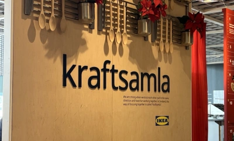
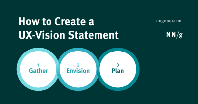
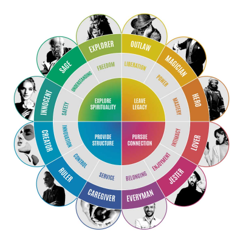

Communicate the vision
Collaboration and inclusion are important parts of a successful project. Within a team it ensures everyone is aligned and working to the same goals.
Within design however it can also lead to the problem of being 'designed by committee'.
Innovative design can often be challenging because it isn't immediately familiar and recognisable. When you first ask for feedback on these designs it might not be particularly positive. Once people have gone through an adaptation period, however, the features that they initially disliked for being different, can suddenly become the most loved and valued part of a product.
Our job as product designers is not just contributing to innovative (and challenging) design features - but to have conviction in our work and the process behind it, and to stand up for it when it's not being immediately adopted. This can mean developing skills to help get users and stakeholders onboard with the concept, clearly demonstrating the potential this new way of doing something will offer.
One of our strengths as product designers is the ability to understand the 'as-is' landscape and to develop a 'to-be' vision that is transformative to both the client business and the user experiences. The scope of this vision will be different from one project to another. On a small project it might be a vision of what we can do to improve the user journey within a few weeks. Or it might be a vision of what we can do to completely transform a huge enterprise platform spanning multiple countries, platforms with enormous operational requirements and will take multiple years to build.
Communicating an ambitious vision for the smaller project is not necessarily easier than it is for the larger project. It might even be more difficult because there is less time to fully understand the problem space to confidently make ambitious design decisions. And less time to get stakeholders onboard with the vision.
Having a vision is vital in delivering great design. It might not always be possible to deliver the vision in full in the first version of a product. But, as a product designer, if you have a clear vision of the 'to-be' product - you can ensure that any design decisions being made are a step towards the ultimate vision even if it's not fully manifested right now.
The Zen of Collaboration: 5 Strategies to Avoid Design by Committee

Key strategies to avoid design by committiee in product development.
How to create a UX vision statement

Create a vision statement using a collaborative, research backed process to increase team members' understanding and alignment of UX efforts.
Brand archetypes: the definitive guide

There are 12 brand archetypes. This article shows how you can use them to hack the mind of your audience to create enduring connections and informing the right vision for the business.